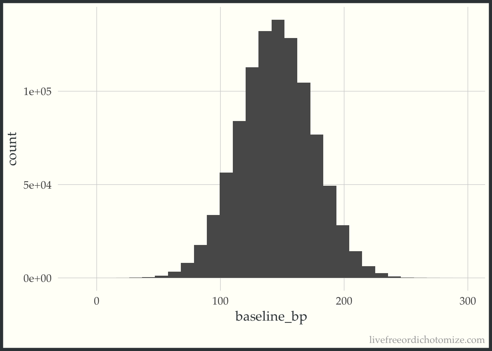
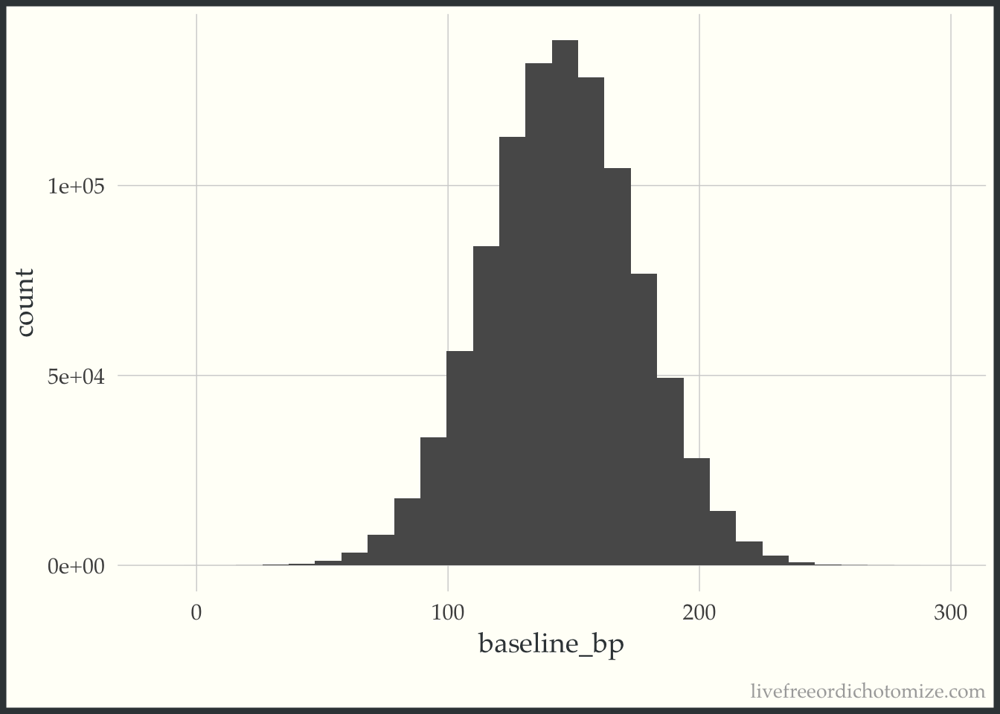
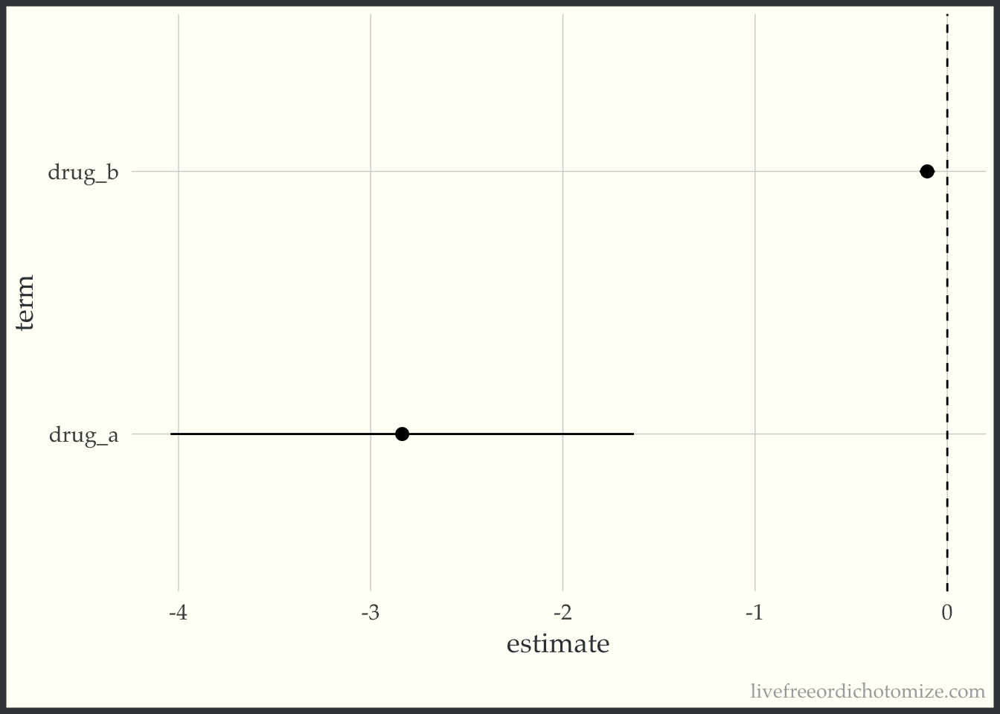
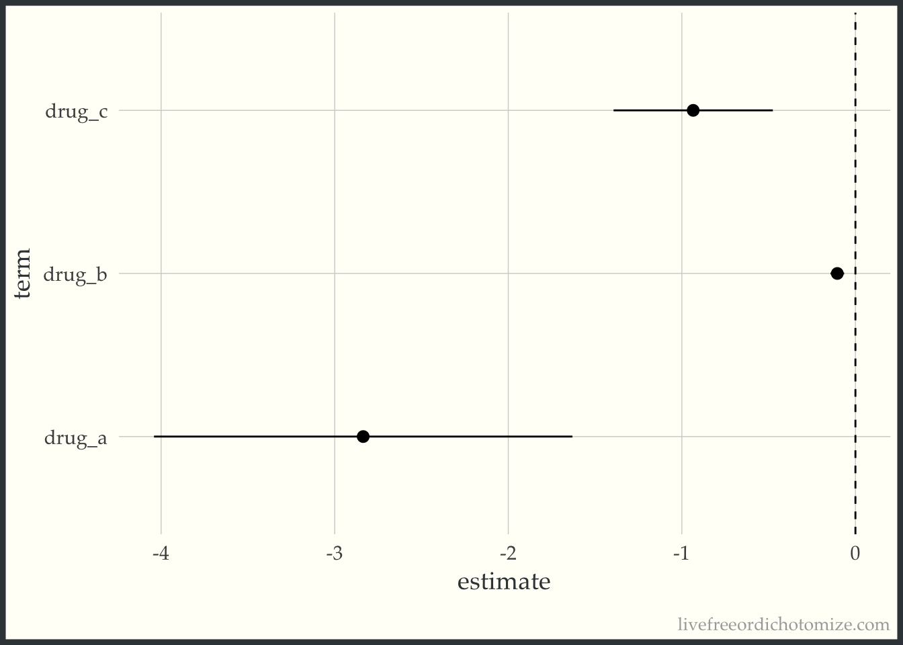
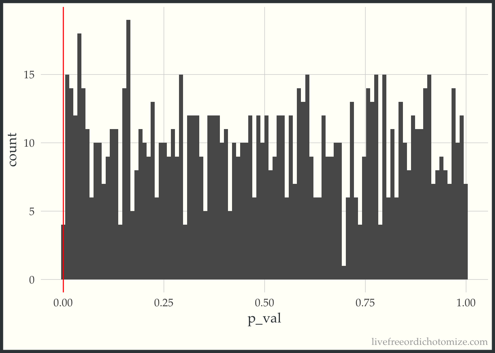

library(tidyverse)
set.seed(924)
population <- tibble(
baseline_bp = rnorm(10^6, mean = 145, sd = 30)
)
ggplot(population, aes(baseline_bp)) +
geom_histogram(bins = 30)
A conversation about how “convincing” various studies were based on sample size and p-values led me to post the following poll on twitter.
Fun fact: This was my first ever Twitter poll! I’ve avoided them because they seem hard to do well, but it led to fun conversations and thinking about the results was actually quite enjoyable! {{% tweet "1029534591760195584" %}}
The results definitely surprised me - while I somewhat expected the large study to win out, I definitely didn’t think it would by such a large margin. For what it’s worth, I would have voted for the small study if I could have voted in my own poll.
You can find Royall’s “The Effect of Sample Size on the Meaning of Significance Tests” here. Unfortunately it is behind a paywall, but the first page is available has a lot of good discussion.My initial intention was to post this question, and follow up by posting an article by Royall titled “The Effect of Sample Size on the Meaning of Significance Tests” where this conundrum is discussed. Daniël Lakens anticipated this and responded with a link to the same article as well!
{{% tweet "1029734016474390528" %}}
While this paper doesn’t necessarily tell you under which circumstance you ought to be more convinced, when I initially read it in Jeffrey Blume’s Advanced Topics course at Vandy, I walked away with two main impressions:
I think I still stand by 2, but I want to delve a bit deeper into 1, since it seems most of the people in my biased twitter-sphere disagree with me. To do this, I am going to explore three scenarios. In all cases, there is a small study and a large study, and the p-values from both studies are the same.
This first scenario is the one I was considering when I posted the poll (and when I initially read Royall’s paper). This definitely demonstrates one way twitter polls are so delightfully flawed – they often don’t leave enough room to state all assumptions – but in this case I actually think this lead to really neat discussion, since differing views came up in the replies!
In order to demonstrate what I mean here, I am going to set up a small simulation. We have two studies, Study A and Study B. Study A is “small”, it has 16 participants. Study B is “large”, it has 10,000 participants. Both are examining new blood pressure drugs, drug A and drug B, and comparing them to “standard of care”. The study populations are the same, let’s say the distribution of systolic blood pressure in this population is Normal with a mean of 145 and a standard deviation of 30. I can generate this population in R with the following code:
library(tidyverse)
set.seed(924)
population <- tibble(
baseline_bp = rnorm(10^6, mean = 145, sd = 30)
)
ggplot(population, aes(baseline_bp)) +
geom_histogram(bins = 30)
Under these circumstances, in order for the two p-values to be the same, the effect size for the larger study, Study B, must be smaller. For example, let’s say the true effect of Drug A is -2.5, and the effect of Drug B is -0.1.
population <- population %>%
mutate(bp_drug_a = baseline_bp - 2.5 + rnorm(10^6),
bp_drug_b = baseline_bp - 0.1 + rnorm(10^6),
bp_soc = baseline_bp + rnorm(10^6))Let’s create the sample for Study A and see what happens.
set.seed(1)
# sample 16 from the large population
study_a <- population[sample(1:10^6, 16), ]
# update so the first half receive drug A and the second receive standard of care
study_a <- study_a %>%
mutate(drug_a = case_when(
row_number() %in% 1:8 ~ 1,
TRUE ~ 0
),
outcome = case_when(
drug_a == 1 ~ bp_drug_a,
TRUE ~ bp_soc
)) %>%
select(baseline_bp, outcome, drug_a)
# test association between drug A and blood pressure
lm(outcome ~ baseline_bp + drug_a, data = study_a) %>%
broom::tidy() %>%
filter(term == "drug_a")# A tibble: 1 × 5
term estimate std.error statistic p.value
<chr> <dbl> <dbl> <dbl> <dbl>
1 drug_a -2.84 0.558 -5.08 0.000210And now the sample for Study B.
set.seed(62)
# sample 10000 from the large population
study_b <- population[sample(1:10^6, 10000), ]
# update so the first half receive drug B and the second receive standard of care
study_b <- study_b %>%
mutate(drug_b = case_when(
row_number() %in% 1:5000 ~ 1,
TRUE ~ 0
),
outcome = case_when(
drug_b == 1 ~ bp_drug_b,
TRUE ~ bp_soc
)) %>%
select(baseline_bp, outcome, drug_b)
# test association between drug B and blood pressure
lm(outcome ~ baseline_bp + drug_b, data = study_b) %>%
broom::tidy() %>%
filter(term == "drug_b")# A tibble: 1 × 5
term estimate std.error statistic p.value
<chr> <dbl> <dbl> <dbl> <dbl>
1 drug_b -0.104 0.0201 -5.19 0.000000220Both of these have approximately the same p-value (0.0005), but the effect sizes are very different! Perhaps we can see this relationship a bit more clearly using confidence intervals.
mod_a <- lm(outcome ~ baseline_bp + drug_a, data = study_a)
confint_a <- broom::tidy(mod_a) %>%
bind_cols(broom::confint_tidy(mod_a)) %>%
filter(term == "drug_a")Warning: confint_tidy is now deprecated and will be removed
from a future release of broom. Please use the applicable
confint method.mod_b <- lm(outcome ~ baseline_bp + drug_b, data = study_b)
confint_b <- broom::tidy(mod_b) %>%
bind_cols(broom::confint_tidy(mod_b)) %>%
filter(term == "drug_b")Warning: confint_tidy is now deprecated and will be removed
from a future release of broom. Please use the applicable
confint method.confints <- bind_rows(confint_a, confint_b)
ggplot(confints, aes(x = term, y = estimate, ymin = conf.low, ymax = conf.high)) +
geom_pointrange() +
geom_hline(yintercept = 0, lty = 2) +
coord_flip()
Looking at these results, if you were to ask me whether I would prefer to take Drug A or Drug B to lower my blood pressure, I’d say Drug A. Drug B is essentially detecting a clinically meaningless result. This came up a few times in the poll’s replies, for example here:
{{% tweet "1029588551162245120" %}}
If you require a little more convincing, let’s introduce a third study that falls in the middle, Study C. This study has 100 participants and an effect size of -1. How am I picking these effect sizes? We know the p-value is a function of the effect size and standard error, so I’ve chosen each effect size such that the ratio of the effect size to standard error would be equal. For example, in the first case, this is proportional to \(-2.5\sqrt{16}\), and in the second case, this is proportional to \(-0.1\sqrt{10000}\), both of which equal -10.
population <- population %>%
mutate(bp_drug_c = baseline_bp - 1 + rnorm(10^6))set.seed(68)
# sample 100 from the large population
study_c <- population[sample(1:10^6, 100), ]
# update so the first half receive drug C and the second receive standard of care
study_c <- study_c %>%
mutate(drug_c = case_when(
row_number() %in% 1:50 ~ 1,
TRUE ~ 0
),
outcome = case_when(
drug_c == 1 ~ bp_drug_c,
TRUE ~ bp_soc
)) %>%
select(baseline_bp, outcome, drug_c)
mod_c <- lm(outcome ~ baseline_bp + drug_c, data = study_c)
confint_c <- broom::tidy(mod_c) %>%
bind_cols(broom::confint_tidy(mod_c)) %>%
filter(term == "drug_c")Warning: confint_tidy is now deprecated and will be removed
from a future release of broom. Please use the applicable
confint method.confints <- bind_rows(confints, confint_c)
ggplot(confints,
aes(x = term, y = estimate, ymin = conf.low, ymax = conf.high)) +
geom_pointrange() +
geom_hline(yintercept = 0, lty = 2) +
coord_flip()
As expected, Study C, which has approximately the same p-value as Study A and Study B, has an effect size that falls between the two, since the sample size falls between as well. This phenomenon was also explored in Peter Freeman’s The role of P-values in analysing trial results, as pointed out by Anupam Singh in the replies.
{{% twitter "1029620344410255360" %}}
Okay, so now I’ve shown you why I would have chosen the small study in my poll. Note here the small study that I have simulated is truly better (in other words in the large population, Drug A really does have a much larger effect size when compared to B or C). If we were to sample 10,000 participants from the Drug A group from the large population, we would see the same effect size (-2.5) with a much tighter confidence interval; this isn’t just a spurious result.
Let’s now explore what would happen if we found the same p-value for the same intervention in the same population. I hadn’t really considered this case when I was posting the poll, but I think it is an important one to discuss! It was brought up a few times in the replies, for example:
{{% twitter "1029648273894727680" %}}
Let’s use my same population as above, but just examine Drug B. We have two studies, one with 16 participants analyzing the efficacy of Drug B, and one with 10,000 participants. The “true” underlying effect here is still -0.1, the p-value will be 0.0005, as we obtained in the section above. There are a few different ways I could imagine this happening.
For the purposes of this example, I am going to assume the study designs are the same (except for the sample size), and target the second cause. I can imagine there is some sample of 16 from our large population of a million that would result in this spurious result. Let’s see if we can find one.
seed <- 0
p_val <- 1
while (p_val != 0.0005) {
seed <- seed + 1
set.seed(seed)
# sample 16 from the large population
study_b <- population[sample(1:10^6, 16), ]
# update so the first half receive drug B and the second receive standard of care
study_b <- study_b %>%
mutate(drug_b = case_when(
row_number() %in% 1:8 ~ 1,
TRUE ~ 0
),
outcome = case_when(
drug_b == 1 ~ bp_drug_b,
TRUE ~ bp_soc
)) %>%
select(baseline_bp, outcome, drug_b)
# test association between drug B and blood pressure
p_val <- lm(outcome ~ baseline_bp + drug_b, data = study_b) %>%
broom::tidy() %>%
filter(term == "drug_b") %>%
pull(p.value) %>%
round(4)
}This took a bit of time, but after 5124 tries, it did find a seed where it happens!
set.seed(5125)
# sample 16 from the large population
study_b <- population[sample(1:10^6, 16), ]
# update so the first half receive drug B and the second receive standard of care
study_b <- study_b %>%
mutate(drug_b = case_when(
row_number() %in% 1:8 ~ 1,
TRUE ~ 0
),
outcome = case_when(
drug_b == 1 ~ bp_drug_b,
TRUE ~ bp_soc
)) %>%
select(baseline_bp, outcome, drug_b)
# test association between drug B and blood pressure
lm(outcome ~ baseline_bp + drug_b, data = study_b) %>%
broom::tidy() %>%
filter(term == "drug_b")# A tibble: 1 × 5
term estimate std.error statistic p.value
<chr> <dbl> <dbl> <dbl> <dbl>
1 drug_b -0.268 0.613 -0.437 0.669Here, the effect size is super exaggerated. We know the true effect size is -0.1, and yet here we are seeing an effect of -1.4. We are definitely seeing this by chance. Let’s look at the distribution of p-values in this small sample.
get_p_val <- function() {
study_b <- population[sample(1:10^6, 16), ]
# update so the first half receive drug B and the second receive standard of care
study_b <- study_b %>%
mutate(drug_b = case_when(
row_number() %in% 1:8 ~ 1,
TRUE ~ 0
),
outcome = case_when(
drug_b == 1 ~ bp_drug_b,
TRUE ~ bp_soc
)) %>%
select(baseline_bp, outcome, drug_b)
# test association between drug B and blood pressure
lm(outcome ~ baseline_bp + drug_b, data = study_b) %>%
broom::tidy() %>%
filter(term == "drug_b") %>%
pull(p.value)
}
p_vals <- tibble(
p_val = map_dbl(1:1000, ~get_p_val())
)
ggplot(p_vals, aes(p_val)) +
geom_histogram(bins = 100) +
geom_vline(xintercept = 0.0005, color = "red")
The red line denotes 0.0005. In this run of 1,000 simulations, we only had 0 where the p-value was less than 0.0005.
All this is to say that if I were to observe two studies measuring the same intervention with the same study design, one was small and one was large, I would definitely trust the large study. Perhaps this is what three quarters of my twitter-sphere were thinking! This seems akin to Gelman’s “What doesn’t kill my significance makes it stronger” fallacy, brought up in the replies:
{{% twitter "1029777778806280193" %}}
If a small and large study are evaluating the exact same thing, but show different results, I would certainly trust the large study more.
PHEW this post seems really long, sorry, dear readers! Here is a cute gif of a cat covered in chicks for your troubles.  This brings us to our final scenario, measuring the same intervention on different populations. This is another scenario that I didn’t consider prior to posting this poll! A few people brought up the possibility by asking about the effect size, for example Miles McBain said:
This brings us to our final scenario, measuring the same intervention on different populations. This is another scenario that I didn’t consider prior to posting this poll! A few people brought up the possibility by asking about the effect size, for example Miles McBain said:
{{% twitter "1029555525648703489" %}}
To which I initially replied that I didn’t think that was possible. Nick then chimed in to set me straight, and after much back and forth I finally understood how that was possible. Essentially if the larger study ALSO had a larger standard deviation, proportional to the ratio of the square root of the sample sizes, this would happen. Here I’m not sure exactly which I would find more convincing, as they are really looking at different things.
SO there we have it! This poll generated a lot of fun discussion, please feel free to let me know if you think I’ve left off an important scenario to consider. There are so many more fun things to discuss when thinking about what makes studies “convincing”. None of these simulations take into account systematic bias, for example, from which a large sample size will never save you! Perhaps that can be left for a post for another day on the trade-off between bias and power. After all of this, my real conclusions remain similar to how I felt previously,
🤔 p-values are hard
🕯 confidence intervals shed more light on the situation
🎉 twitter is a fun way to spur good discussion!